29 февраля 2020 года в Минском областном институте развития образования состоялся финал открытого фестиваля «Я – исследователь».
Наше учреждение образования на фестивале представил учащийся II «Г» класса Турский Захар со свой исследовательской работой
«Робот-полотер и анализ эффективности алгоритмов его передвижения» (руководитель работы-Рулёва Валентина Михайловна).
В ходе стендовой защиты Захар творчески описал ребятам и членам жюри процесс создания собственного робота-полотера из деталей
конструктора «LEGO», его программирование, эксперимент в выборе наиболее эффективного способа передвижения робота в помещении для
качественной помощи бабушке в уборке квартиры.
Поздравляем нашего юного исследователя и желаем ему дальнейших творческих успехов в захватывающем мире науки!
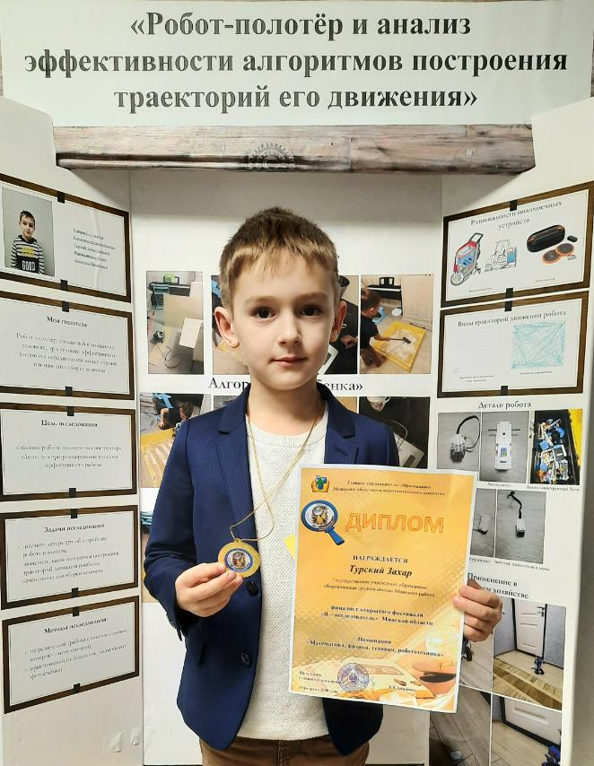
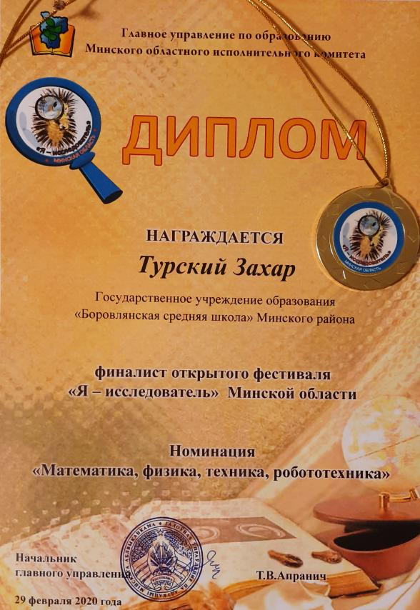
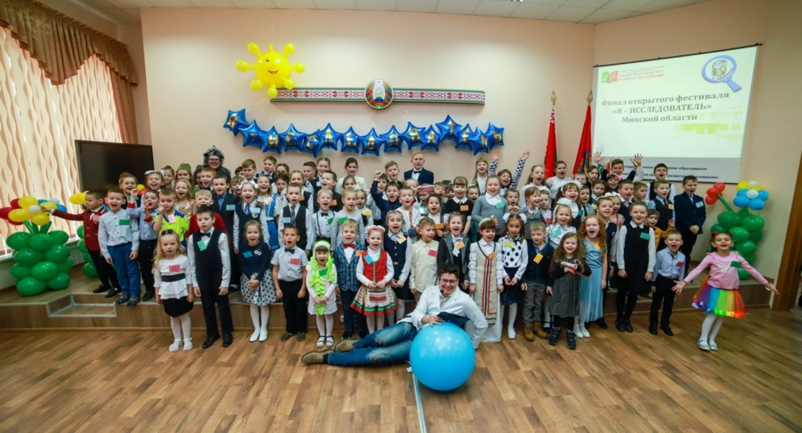
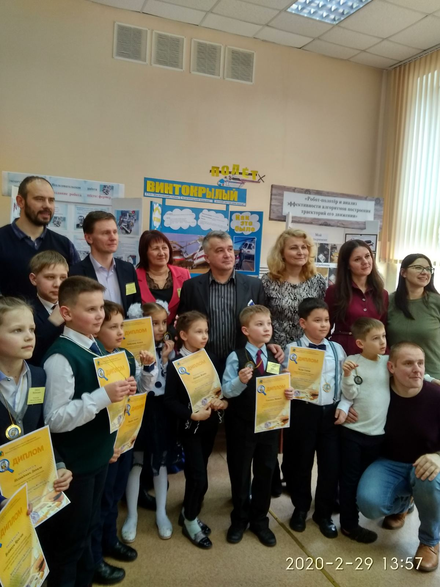
9 января 2020 года в Минском районе прошел конкурс исследовательских работ и творческих проектов детей младшего школьного возраста
«Я-исследователь». На конкурс представили свои исследовательские работы 3 учащихся начальных классов ГУО «Боровлянская
средняя школа».
По результатам конкурса, согласно решению жюри, награждены:
1. Дипломом I степени-Турский Захар, учащийся II «Г» класса, руководитель работы - Рулева В.М.
2. Дипломом II степени- Шеин Алексей, учащийся III «Д» класса, руководитель работы -Швед В.В.
3. Дипломом III степени- Олюха Никита , учащийся IV «Д» класса, руководитель работы- Гончарик Н.В.
Выражаем благодарность родителям конкурсантов за поддержку и создание условий для успешной реализации проектов, руководителям работ
- за высокий профессионализм и педагогическую компетентность в работе с высокомотивированными детьми.
От всей души поздравляем учащихся-исследователей и их педагогов! Желаем Турскому Захару успешно представить Минский район на
областном конкурсе работ исследовательского характера детей и младших школьников «Я-исследователь-2020»!
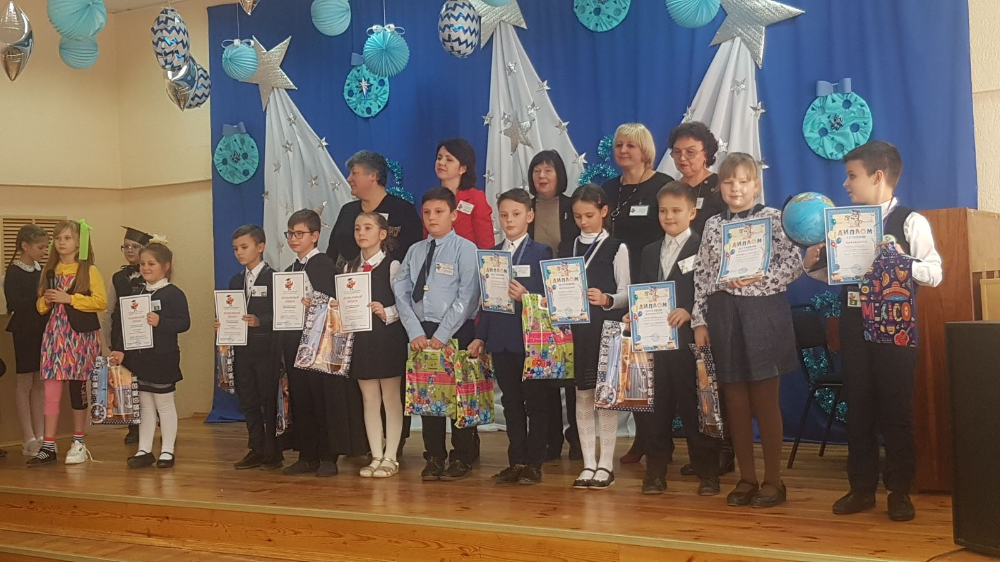
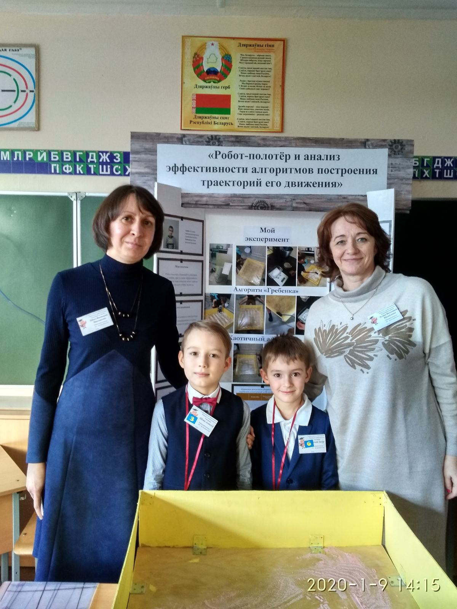
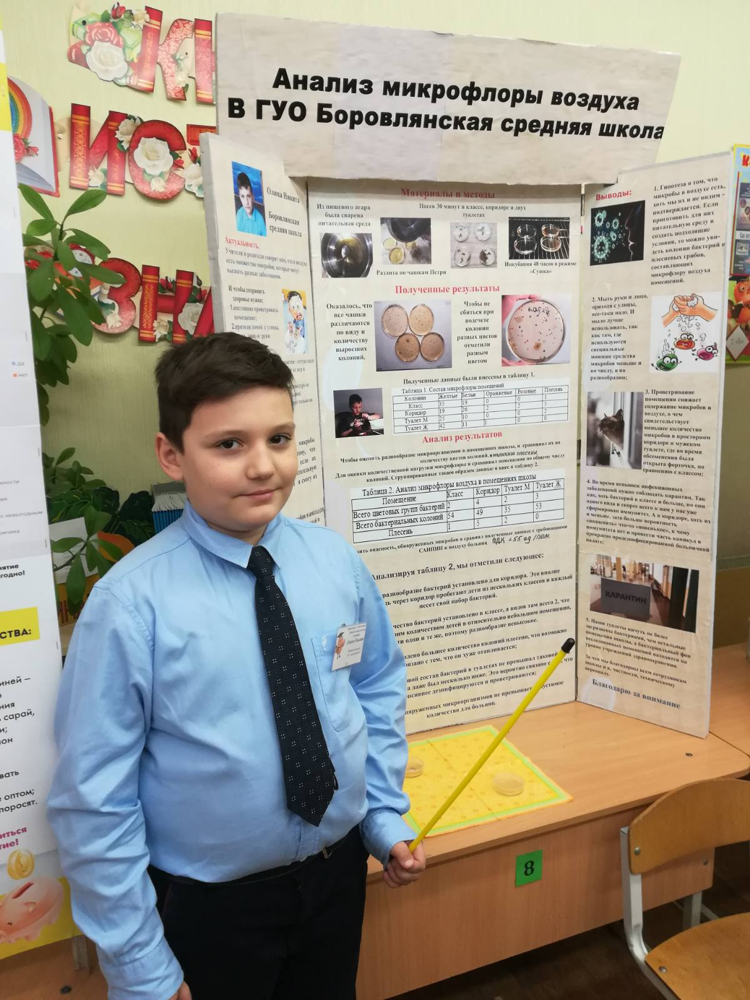
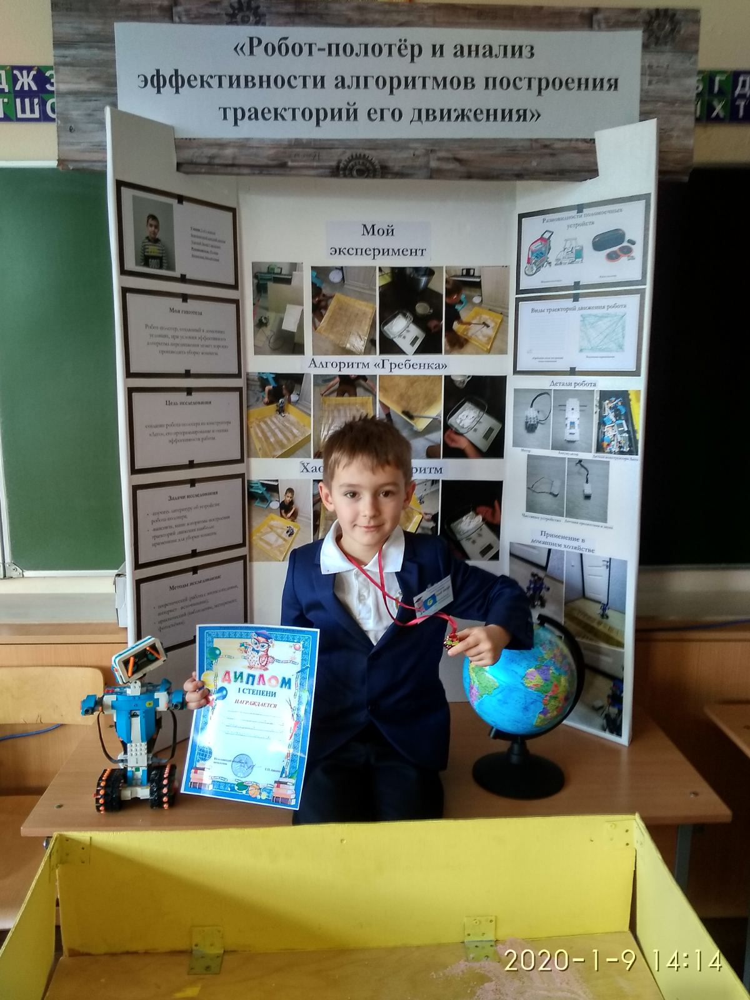
07 декабря 2019 года в государственном учреждении образования «Боровлянская средняя школа» прошел школьный этап конкурса
исследовательских работ младших школьников «Я -исследователь!».
На конкурсе были представлены работы учащихся первых-четвертых классов в номинациях:
1. «Естествознание (живая природа)» -Кучинский Михаил, учащийся I «В» класса ,руководитель работы-Кучинская Л.Г ;Королевич Диана,
учащаяся I I I «А» класса, руководитель работы- Жерко О.А.; Олюха Никита , учащийся IV «Д» класса, руководитель работы-
Гончарик Н.В.
2. «Физика. Математика. Техника» -Турский Захар, учащийся I I «Г» класса, руководитель работы - Рулева В.М.; Шеин Алексей,
учащийся I I I «Д» класса, руководитель работы -Швед В.В.
3. «Гуманитарные знания»- Богданович Никита, учащийся IV «В» класса, руководитель работы-Юхновец М.В.
Юные исследователи подготовили интересные и познавательные работы, грамотно отвечали на вопросы членов жюри. При подведении
итогов каждому участнику были вручены грамоты и памятные призы.
Благодарим за участие всех ребят, их родителей и учителей! Желаем успехов в дальнейших открытиях!
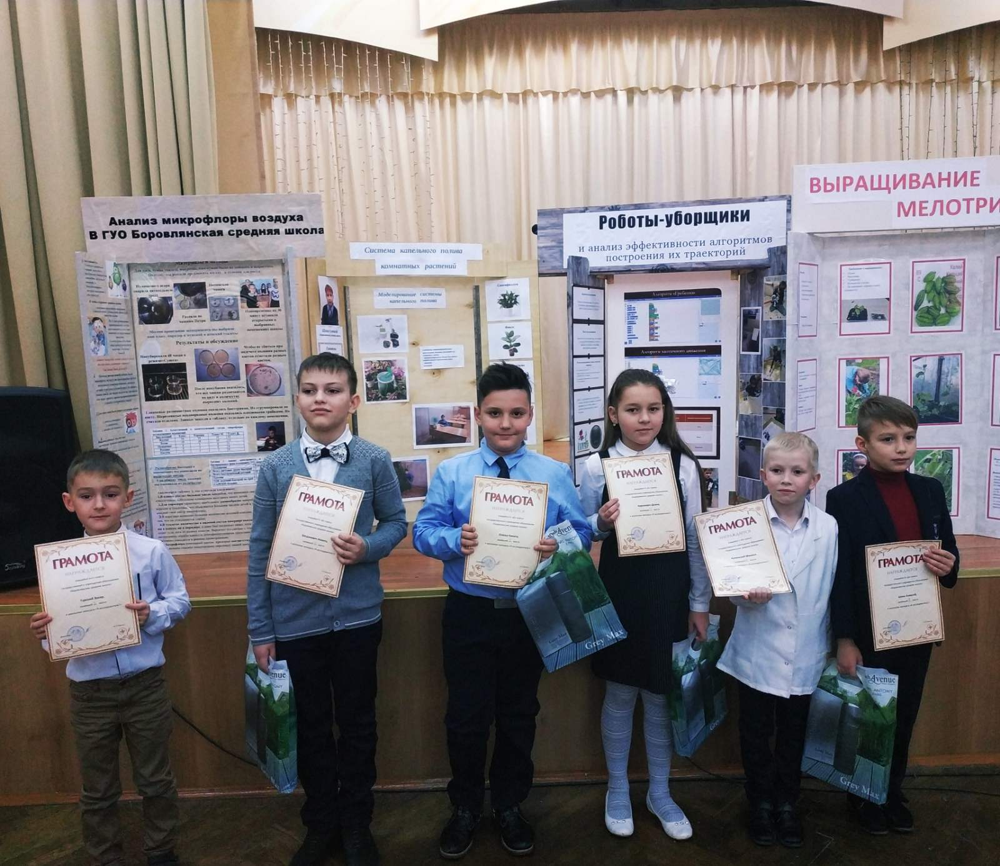
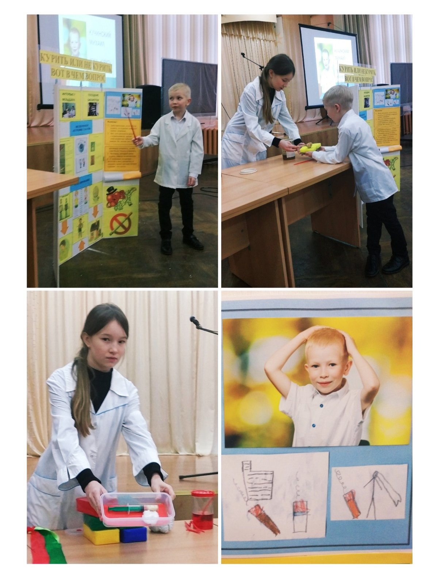
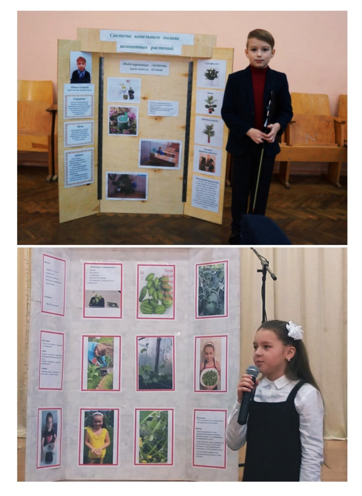
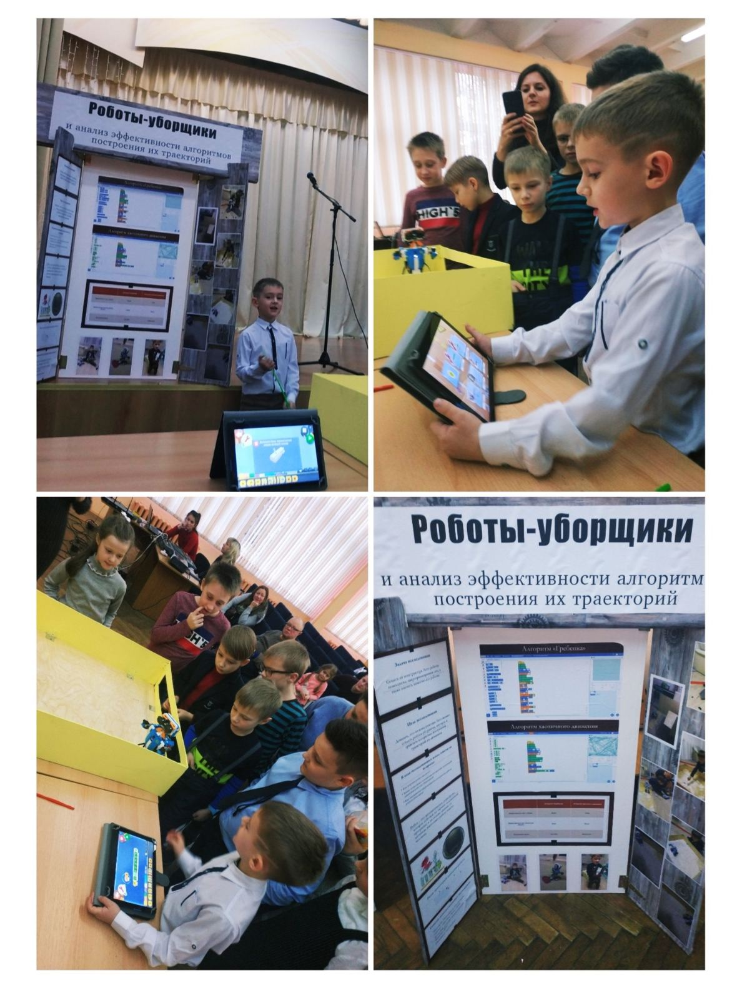

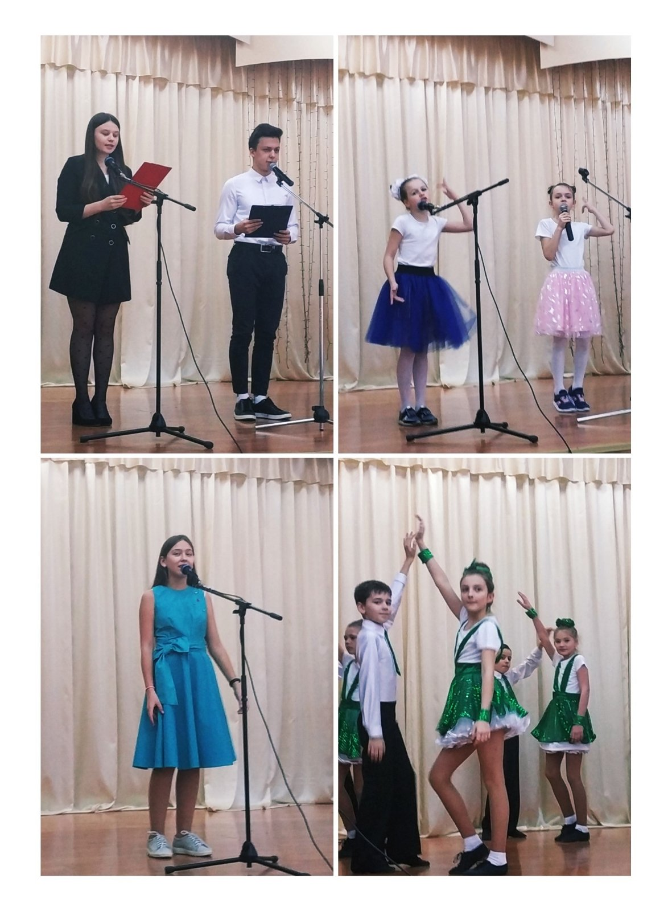